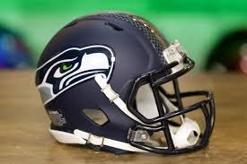

2025 Chart
A few examples that the games were ran through the season:
| Week | Date | Opponent | Home/Away |
|---|---|---|---|
| 1 | Sept 7 | 49ers | Home |
| 2 | Sept 14 | Rams | Away |
| 3 | Sept 21 | Cardinals | Home |
| 4 | Sept 28 | Packers | Away |
| 5 | Oct 5 | Cowboys | Home |
Game Day Photos
Just a few simple shots to match the schedule vibe.
